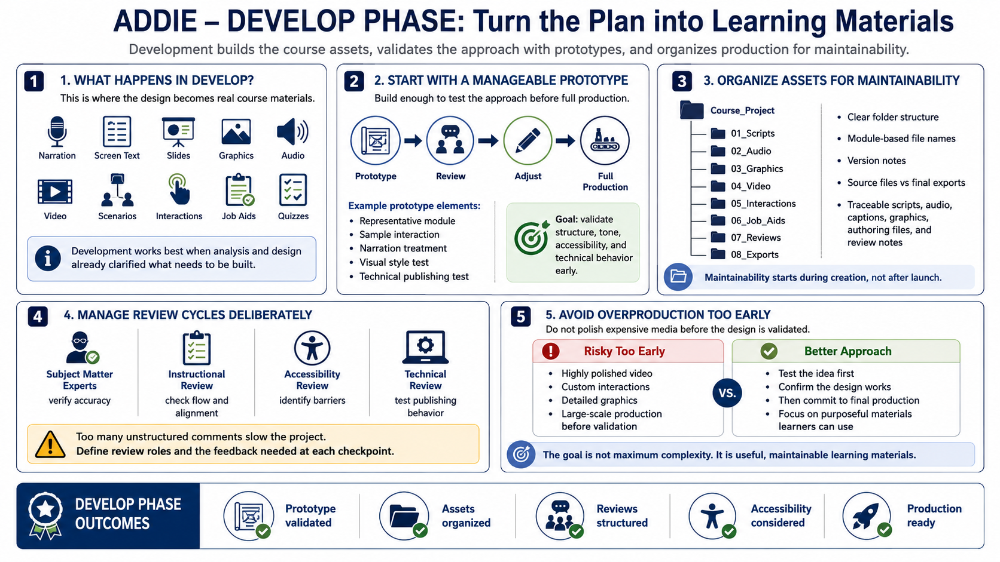

Develop - Building Course Materials
Connecting to LMS... Progress: in progress

Narration
The Develop phase is where the plan becomes materials. Course creators write narration, refine screen text, create slides, build graphics, record audio, edit video, assemble scenarios, configure interactions, create job aids, and build quizzes. This is the most visible phase, but it works best when the analysis and design work have already clarified what needs to be built.
Development should begin with stable content and a manageable prototype. A prototype might include a representative module, a sample interaction, a narration treatment, or a technical publishing test. The point is to validate structure, tone, visual style, accessibility approach, and technical behavior before the team invests in full production. Prototyping reduces the chance of rebuilding the entire course later.
Asset organization matters during development. Use clear folder structures, module-based file names, version notes, and a distinction between source files and final exports. Keep narration scripts, audio files, caption files, graphics, authoring files, and review notes traceable. Maintainability is not something to worry about after launch; it starts while the materials are being created.
Review cycles should be managed deliberately. Subject matter experts can verify accuracy, instructional reviewers can check flow and alignment, accessibility reviewers can identify barriers, and technical reviewers can test publishing behavior. Too many unstructured review comments can slow the project, so define review roles and the type of feedback needed at each checkpoint.
Avoid overproduction before the design is validated. Highly polished videos, custom interactions, or detailed graphics are expensive to change. Build enough to test the idea, then commit to final production when the team agrees the design works. The goal of development is not maximum complexity; it is purposeful material that learners can use and the organization can maintain.